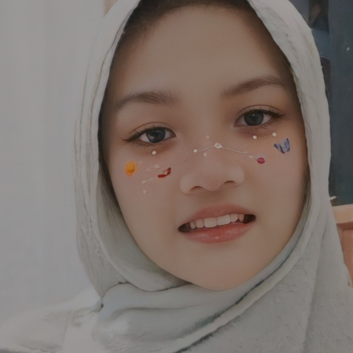

Aisyah Haniina
IT Specialist

+6289601930124 | haniynaaicca@gmail.com | http://github.com/ayshaniina
Kab.Bogor, Jawa Barat, Indonesia
Pengalaman Project
Riwayat Pendidikan
SMP Qur'an As Salaam
Karanggan, Gunung Putri, Kab.Bogor
SMAIT AMALIA
Cibinong, Kab.Bogor
STT Terpadu Nurul Fikri
(Undergraduate in Information System Student)
Pengalaman Organisasi
AQSO OSIS As Salaam
anggota divisi keamanan
dapat bekerjasama dalam tim, berdiskusi dengan baik, disiplin, bertanggung jawab, serta dapat mengontrol keamanan
Himpunan ekstrakulikuler jurnalistik
mampu memilah informasi, menganalisis data, bertanggung jawab dengan hal yang berkaitan dengan ide ide komunikasi dan informasi serta pemanfaatan teknologi untuk penyebarannya
Keahlian
Hardskill: Bekerja cepat, Manajemen waktu, Dapat bekerja tim, dan kepemimpinan
Softskill: Microsoft Office Word, Microsoft Office Excel